rustmatch

Status: active implementation. The vertically integrated semantic spine now covers the documented rmatch 2.x consuming language, including UTF-16, flags, anchors, and boundaries, with pinned Java evidence. Optimization and scale work has completed explicit parallel pattern partitioning; ordinary cross-engine harness integration is next. This is a development prototype, not a published crate.
Roadmap: See the implementation dependency graph and current status. Planning is complete; implementation is at
10/12increments started and10/12complete. The B1 cross-engine campaign is active.
Engineering standards: Documentation, Rust hygiene, testing, and pull- request expectations are part of the product contract.
Project participation: Contributing - Code of Conduct - Security - Support - Governance
rustmatch is intended to be a native Rust implementation of the rmatch idea:
register many regular expressions once, compile them into shared matching
machinery, and scan large text inputs without running an independent full
search for every pattern.
The goal is semantic compatibility, not source-code similarity. The Java implementation is the behavioral reference and an important source of lessons, but the Rust implementation should use Rust's strengths: ownership, explicit lifetimes, enums, dense integer-indexed storage, contiguous memory, fearless parallelism, and a small public API. This is not a Java-to-Rust transliteration project.
TL;DR
What we are building
- A pure Rust, Apache-2.0-licensed many-pattern regular-expression engine.
- A matcher with the same supported syntax and match-selection semantics as rmatch 2.x.
- A Rust-native API for building an immutable pattern database and reusing it across large inputs.
- A benchmark adapter that participates in the same correctness-gated, receipt-producing campaigns as Java rmatch, RE2/J, Java regex, and Hyperscan.
- An implementation designed from the data layout inward, not a mechanical port of Java classes.
What "compatible" means
For the canonical compatibility input mode, Java rmatch and rustmatch must:
- Accept and reject the same documented pattern language.
- Produce the same multiset of
(pattern_id, start, end)match events. - Report the longest match for each pattern and input start position.
- Report matches from every eligible start position, including overlapping and nested matches.
- Use half-open
[start, end)offsets. - Apply the same ASCII definitions for shorthand classes and word boundaries, and the same Java single-UTF-16-unit case mapping.
- Preserve the same build-then-scan lifecycle and failure boundaries where those are observable to callers.
Callback order is intentionally unspecified in both implementations and is not part of compatibility. Rust API spelling and type structure are also not expected to resemble Java API spelling.
There is one non-negotiable wrinkle: Java char and String positions are
UTF-16 code units, while Rust str is UTF-8. Exact parity therefore requires a
canonical UTF-16 compatibility input and UTF-16 offsets. The first stable API
must expose that fact honestly. An ergonomic UTF-8 facade may be added, but it
must not quietly relabel byte offsets as Java-compatible offsets.
Initial API
The first public surface is deliberately smaller than the eventual convenience API. It is implemented as follows:
use rustmatch::{MatcherBuilder, PatternId, Utf16Text};
let mut builder = MatcherBuilder::new();
builder.add(PatternId::new(1), "cat")?;
builder.add(PatternId::new(2), "dog")?;
let matcher = builder.build()?;
let input = Utf16Text::from("cat and dog");
matcher.scan(&input, |hit| {
println!(
"pattern={} span={:?}",
hit.pattern_id(),
hit.span(),
);
})?;
The public types are MatcherBuilder, Matcher, PatternId, PatternFlags,
Utf16Text, Match, Utf16Span, and one non-exhaustive Error type. The
methods cover construction, plain or flagged pattern registration, build,
scan, bounded state-cache configuration, explicit pattern-partition worker
configuration, and read-only accessors. The cache
defaults to 8,192 scan-local deterministic states; setting
MatcherBuilder::state_cache_budget(0) selects the exact NFA path. Filling a
nonzero budget also falls back to that path rather than dropping work.
MatcherBuilder::worker_count(1) is the default direct path. Larger values
partition patterns deterministically, scan those partitions on scoped threads,
join them, and deliver callbacks serially on the caller thread. The best count
depends on the machine, pattern set, corpus, and match density; rustmatch does
not encode one benchmark machine's optimum as a universal heuristic.
PatternId is a u32-backed domain type;
positions remain u64 UTF-16 coordinates; and Utf16Text owns its exact
Vec<u16>. Parser, HIR, NFA, state, cache, worker, and sink
implementation types stay private. Borrowed or custom inputs, iterators, async
APIs, fallible callbacks, runtime pattern mutation, and other tuning knobs are
deferred until a concrete use case earns them. Cache counters remain available
only to repository tooling behind the non-default benchmark-internals
feature and are not part of the supported application API.
The lifecycle is explicit:
register patterns -> build immutable matcher -> scan one or more inputs
No pattern mutation occurs while a compiled matcher is in use. A changed rule set produces a new matcher.
Current support contract
The executable spine currently has this deliberately small contract:
| Area | Current behavior |
|---|---|
| Patterns | Accept one or more non-empty patterns made from UTF-16 literals, dot, character classes, ranges, supported escapes, ASCII shorthand classes, alternation, plain or non-capturing groups, greedy repetition, prefix i/s flags, line anchors, and ASCII word boundaries. Reject scoped flags, lazy quantifiers, possessive quantifiers, and patterns that can only match zero width. |
| Input | Accept any finite sequence of UTF-16 code units, including empty input and isolated surrogates. Rust strings are encoded once; Utf16Text::from_units preserves raw units. |
| Pattern identity | Require a unique caller-supplied PatternId. The same literal may be registered under different IDs; a duplicate ID is an error. |
| Matches | For every pattern and every input start position, report the longest match from that start. Report matches at all starts, including overlaps. Alternatives may give one pattern several possible lengths. |
| Event identity | A match consists of its PatternId and span. Equal text registered under different IDs produces distinct events. |
| Coordinates | Report zero-based, half-open UTF-16 spans [start, end). A supplementary Unicode scalar therefore occupies two engine positions. |
| Ordering | Callback order is unspecified. Compatibility tests compare normalized event multisets, not callback order. |
| Failure boundary | Reject an invalid pattern during registration or build. Return an error if an input position cannot fit the public coordinate type. Expected user errors do not panic. |
| Lifecycle | Build an immutable matcher, then scan any number of inputs. Changing the pattern set requires a new matcher. |
| Parallelism | Default to one direct worker. An explicit larger worker count partitions patterns, preserves the event multiset, buffers multi-worker events, joins all scoped workers, and delivers callbacks serially. |
The current pattern syntax is deliberately explicit:
.matches one UTF-16 code unit, including newline and isolated surrogates.[abc],[a-z],[^abc], and unions of literals, ranges, and supported class escapes compile to one UTF-16 predicate. Empty[]matches nothing;[^]matches every UTF-16 code unit.\dis0-9;\wisA-Z,a-z,0-9, and_;\sis space, tab, newline, vertical tab, form feed, and carriage return.\D,\W, and\Scomplement those ASCII member sets over the complete UTF-16 domain.- Escaped metacharacters are literals.
\n,\t,\r, and\fare the supported control escapes. Inside a class,\\,\],\[,\-,\^, the control escapes, and lowercase\d,\w, and\sare supported. a|bselects between alternatives. Parentheses group composition;(ab)and(?:ab)are equivalent because rustmatch does not capture.?,*,+,{m},{m,n}, and{m,}greedily repeat the immediately preceding atom or group. Counted bounds may not exceed 1,000;{0}and{0,0}are rejected, while{0,}is the unbounded zero-minimum form.- A leading
(?i)enables Java-compatible, single-UTF-16-unit case folding;(?s)is accepted as a no-op because dot always includes newline.(?is)and(?si)combine them.PatternFlags::CASE_INSENSITIVEprovides the same compile-time behavior without rewriting programmatically assembled text. ^constrains a consuming path to input or line start, and$constrains it to input or line end.\band\Btest boundaries using the same ASCII word-character definition as\w. Assertions are NFA edges, not post-hoc filters; assertion-free pattern sets use a separate scan specialization.- A leading or interior empty alternative is an epsilon branch. As in the pinned Java contract, a trailing empty alternative is ignored and an empty group matches nothing. Rustmatch deliberately rejects a pattern that can only produce a zero-width match.
The fixtures cover literals and overlapping starts, all predicate families, ASCII boundary values and newlines, class negation and ranges, literal and control escapes, branching and nested grouping shapes, empty alternatives, greedy and counted repetition, quantifier binding, longest-match ambiguity, raw and supplementary UTF-16, non-ASCII classes, exhaustive Java 21 case-map provenance, prefix and typed flags, and malformed registration cases. The assertion tier adds input and line edges, groups, alternatives, flags, ASCII/non-ASCII boundaries, raw surrogates, phase adversaries, and explicit pure-zero-width rejection.
Development strategy: an executable spine first
The implementation began deliberately narrow but architecturally real. The literal bootstrap, ASCII predicates, branching composition, and repetition increments all execute the intended end-to-end path:
public builder
-> minimal parser and HIR
-> shared dense NFA compiler
-> immutable pattern database
-> production-shaped scan engine
-> longest-match event tracking
-> public match sink
-> oracle and benchmark adapters
This is not a temporary substring loop. It is the first, least capable version of the final system. Every later increment broadens or accelerates this running system while preserving end-to-end tests. At no planned point should the project contain several sophisticated horizontal layers that have never been executed together.
Definition of success
rustmatch is ready for a first stable release only when all of the following
are true:
- The shared semantic suite passes against Java rmatch for supported syntax, rejected syntax, edge cases, and generated cases.
- The Rust adapter passes the benchmark repository's correctness gate before any timing is retained.
- The implementation has no known input-dependent panics for valid public API use.
- The hot scan path performs no per-character heap allocation after warm-up.
- Single-threaded and parallel behavior are documented and tested.
- The public crate surface is small, documented, and does not expose compiler or automaton internals as accidental extension points.
- Every published performance claim links to reproducible receipts containing exact versions, inputs, hashes, machine information, and thread settings.
Non-goals
- Recreating Java package structure or class hierarchy.
- Becoming a drop-in replacement for PCRE,
java.util.regex, Rustregex, RE2, or Hyperscan. - Supporting captures, backreferences, lookaround, or every regex dialect.
- Beating Hyperscan merely because both projects scan multiple patterns.
- Claiming streaming support before retention, lookback, and offset behavior have been specified and tested.
- Using
unsafeas a substitute for a measured design.
Product requirements document
Document metadata
| Field | Value |
|---|---|
| Product | rustmatch |
| Status | Proposed |
| License | Apache License 2.0 |
| Behavioral reference | Maven Central no.rmz:rmatch:2.0.0-RC1 |
| Primary implementation language | Rust 2024 edition |
| Bootstrap toolchain | Rust 1.97.0, pinned for development and primary CI |
| Minimum supported Rust version | Rust 1.85.0, the first Rust 2024 release |
| Primary workload | Many patterns reused over large text buffers |
| Primary quality order | Correctness, semantic parity, predictability, performance |
Background
Conventional regex APIs are usually organized around one compiled expression matching one input. That is excellent for the common case, but it creates a poor scaling shape when an application must apply thousands of expressions to the same large corpus. A straightforward loop repeatedly traverses the same input, once per expression.
Java rmatch explores a different tradeoff. It registers a set of regular expressions, compiles shared finite-automaton machinery, and scans the corpus through a many-pattern pipeline. Recent exploratory measurements suggest that this becomes useful as pattern sets and corpora grow, even though specialized native engines still establish a much higher performance ceiling.
Rust is a natural language for a second implementation because the problem is dominated by representation, locality, controlled allocation, and safe parallel reads. A native Rust implementation can preserve the idea and semantics while reconsidering every internal choice.
Problem statement
Rust users do not currently have an implementation of rmatch's exact many-pattern semantics that can be tested against the Java implementation and inserted into the existing cross-engine benchmark harness. Reusing Java through JNI would preserve code but not produce a native Rust engine, would complicate deployment, and would conceal rather than answer the interesting implementation questions.
We need a Rust-native library that:
- handles large, reusable pattern sets as one compiled database;
- reports the same matches as Java rmatch on its documented language;
- scales from a single worker to explicitly configured parallel execution;
- exposes enough input abstraction for future specialized buffers without making the ordinary string case awkward;
- can be measured fairly beside Java rmatch in the existing benchmark system.
Product principles
- Semantics are a specification, not an anecdote. Compatibility is established by shared fixtures and differential tests.
- Correctness precedes timing. A fast run with the wrong match count is a rejected run.
- Java optimizations are hypotheses, not evidence. We will try ideas that worked in Java rmatch, but each one must prove a positive performance effect in the Rust implementation before it is admitted as an optimization.
- Build the executable spine first. The earliest matcher is narrow but uses the intended compiler, database, engine, event, and test boundaries.
- Rust-native does not mean Rust-different. Internal design should be idiomatic Rust, while observable matching behavior remains compatible.
- Pay for what is used. Assertions, Unicode handling, prefilters, and parallel execution must not impose their full cost on patterns that do not need them.
- Immutable after build. Compilation and scanning are separate phases.
- No accidental public architecture. Dense state tables, compiler stages, caches, and diagnostics stay private unless users have a demonstrated need.
- Receipts over adjectives. Performance descriptions must be backed by versioned, reproducible evidence.
- Safe Rust first. Any
unsafeblock requires a measured benefit, a documented invariant, focused tests, and independent review. - Neat for comprehension. Code, documentation, tests, fixtures, and evidence should be easy for humans and machines to navigate and verify. This favors clarity and explicitness, not ornamental abstraction or churn.
Goals
G-1: Semantic compatibility
Implement the rmatch 2.x syntax and match-selection contract, including overlap, longest-per-start behavior, line anchors, word boundaries, and the documented ASCII-oriented character rules.
G-2: A native Rust product
Offer an API that feels normal to a Rust developer: builders, immutable
compiled values, typed identifiers, explicit errors, borrowed input where
possible, no global mutable engine state, and clear Send/Sync behavior.
G-3: Competitive many-pattern throughput
Build an architecture that can exploit shared automata, dense memory, literal prefiltering, cache reuse, and pattern partitioning. Performance targets are gates against regressions and against the Java reference, not promises made before measurements exist.
G-4: Shared empirical infrastructure
Add rustmatch to rmatch-performance-measurements using the same generated fixtures, containers, correctness checks, timing boundaries, and receipt schema.
G-5: Maintainability
Keep the semantic model, compiler, execution engine, and optimization layers separable enough that each can be tested without relying on incidental internal state.
Non-goals and deferred scope
| Item | Disposition |
|---|---|
| Capture groups and extraction | Not in the rmatch 2.x contract |
| Backreferences | Excluded; not regular-language machinery |
| Lookahead and lookbehind | Deferred and not compatibility promises |
| Lazy or possessive quantifiers | Deferred |
| Atomic groups | Deferred |
| Unicode property classes | Deferred |
| Locale-sensitive or multi-code-point folding | Deferred |
| Pure zero-width match reporting | Excluded from the 2.x contract |
| Mid-pattern or scoped flags | Deferred |
| Dynamic add/remove after build | Explicitly out of scope |
| Unbounded streaming | Requires a separate retention and lookback design |
| Stable automaton serialization | Potential later feature, not a first-release gate |
| C ABI, Python bindings, or WebAssembly API | Potential later projects |
Users and jobs to be done
Application developer
Wants to register hundreds to tens of thousands of rules, scan large inputs, receive pattern identity and spans, and avoid understanding automata internals.
Systems developer
Wants explicit control over parallelism, memory behavior, buffer ownership, and failure propagation. May provide a specialized input implementation.
rmatch maintainer
Wants a second implementation that catches specification ambiguity and behavioral bugs through differential testing.
Performance researcher
Wants a named, reproducible rustmatch engine lane in the cross-engine harness, with compile time, scan time, throughput, memory, match counts, and exact provenance.
Contributor
Wants a staged architecture, local correctness tests, focused benchmarks, and clear rules for when an optimization is acceptable.
Functional requirements
| ID | Requirement | Acceptance signal |
|---|---|---|
| FR-001 | Register a pattern with a stable caller-provided pattern ID | The ID is returned with every event from that registration |
| FR-002 | Register many patterns before build | Pattern count is limited by resources, not a small API ceiling |
| FR-003 | Build an immutable reusable matcher | Scanning cannot mutate the registered pattern set |
| FR-004 | Scan a canonical UTF-16-compatible input | Match offsets agree with Java rmatch on all shared fixtures |
| FR-005 | Report half-open spans | Every hit has start <= end and slices the intended text |
| FR-006 | Report longest match per pattern and start | a+ over aaa reports [0,3), [1,3), [2,3) |
| FR-007 | Preserve independent pattern identity | a and ab may both report at the same start |
| FR-008 | Preserve distinct registrations | Distinct IDs or handlers remain distinguishable even for equal pattern text |
| FR-009 | Support the documented syntax table | Shared positive fixtures pass |
| FR-010 | Reject malformed and unsupported syntax at registration/build time | Shared negative fixtures fail before scanning |
| FR-011 | Remain usable after a rejected registration | A later valid registration can still be built |
| FR-012 | Support explicit single-thread execution | Results match the reference event multiset |
| FR-013 | Support explicit parallel pattern partitioning | Results match the single-thread event multiset |
| FR-014 | Propagate sink/callback failures | The scan returns the original or a documented wrapper error |
| FR-015 | Permit repeated scans with one compiled matcher | Results remain stable across inputs and repetitions |
| FR-016 | Expose a custom read-only input trait | External implementations can provide indexed symbols safely |
| FR-017 | Materialize ordinary Rust strings conveniently | The common path requires no custom trait implementation |
| FR-018 | Emit benchmark-runner JSON | Output can be archived as a standard benchmark receipt |
| FR-019 | Keep every implementation increment executable end to end | Each merged capability is exercised from public builder through match event |
Supported syntax baseline
The initial target is the documented Java rmatch 2.x surface:
| Family | Syntax and behavior |
|---|---|
| Literals | Exact sequences |
| Composition | Concatenation and `a |
| Repetition | ?, *, +, {m}, {m,n}, {m,} |
| Groups | (ab) and (?:ab), grouping only, no captures |
| Any symbol | . includes newline |
| Classes | [abc], ranges, and negated classes |
| Shorthands | ASCII \d, \w, \s and complements |
| Anchors | ^ at input/line start, $ at input/line end |
| Boundaries | ASCII \b and \B |
| Flags | Prefix (?i), (?s), combinations, and typed case-insensitive option |
| Escapes | Supported literal and control escapes from the reference contract |
Counted repetition is capped at 1,000 expanded repetitions unless a later joint specification revision changes both implementations.
Match semantics
The compatibility oracle compares normalized events. For a set of registered
patterns P and input I, an event is:
(pattern_id, start_utf16, end_utf16)
For every pattern and every input start position:
- Consider all legal consuming paths from that start.
- If one or more paths accept, choose the greatest end position.
- Emit one event for that pattern ID and start position.
- Do not suppress events merely because another event overlaps or contains them.
Rustmatch rejects patterns that can only match zero width. The Java reference accepts those patterns but emits no events; the fixture suite records this as the one explicit product difference. Assertions may constrain a consuming match.
The event multiset is normative. Delivery order is not.
Character and offset model
This is the first architectural decision that must be recorded formally.
Java rmatch consumes Java char values. Therefore its symbols and offsets are
UTF-16 code units, not Unicode scalar values and not UTF-8 bytes. A supplementary
Unicode character is two symbols to the Java engine.
The proposed canonical model is:
Symbol = u16.Position = u64counting UTF-16 code units.- Pattern text is parsed as UTF-16 code units, not as Rust Unicode scalar values. This preserves Java atom and quantifier behavior even around supplementary characters.
- The ordinary builder accepts
&strand encodes it to canonical UTF-16 before parsing. A lower-level UTF-16 pattern entry point may admit isolated surrogate units for exhaustive compatibility testing. Utf16Textowns or borrows a stable sequence ofu16symbols.Utf16Text::fromimplementsFrom<&str>and encodes a Rust string to UTF-16 once, outside the scan timing boundary.- Match spans are UTF-16 spans and can always be decoded through the input.
- ASCII corpora have identical byte and UTF-16 offsets, which keeps the current benchmark scenarios straightforward.
An optional UTF-8-native facade may later maintain a checked mapping between
UTF-16 compatibility positions and UTF-8 byte ranges. If introduced, it must
make the coordinate system visible in types, for example Utf16Span versus
ByteSpan. No API may return an unqualified integer offset whose unit is
ambiguous.
Public API requirements
The eventual public crate should expose concepts, not implementation layers:
MatcherBuilderMatcherPatternIdPatternFlagsMatchorMatchEventUtf16Textand/or a carefully named compatibility input type- a read-only
Inputtrait - parse/build/scan error types
- an explicit parallelism configuration
It should not expose:
- NFA or DFA node implementations;
- state-set caches;
- parser event handlers;
- prefilter internals;
- partition worker types;
- graph-printing helpers;
- storage arenas or node IDs other than diagnostic snapshots behind an unstable feature.
Non-functional requirements
| ID | Requirement | Target or gate |
|---|---|---|
| NFR-001 | Correctness | Zero known differential failures in supported syntax |
| NFR-002 | Memory safety | Safe Rust by default; Miri-clean tests for unsafe-free core |
| NFR-003 | Allocation | No per-symbol heap allocation in steady-state scan |
| NFR-004 | Determinism | Same normalized event multiset across worker counts |
| NFR-005 | Reuse | Compiled matcher can scan repeatedly without rebuilding |
| NFR-006 | Concurrency | Immutable matcher is shareable when sink/input contracts permit |
| NFR-007 | Error quality | Parse errors include source span and actionable reason |
| NFR-008 | Observability | Optional aggregate diagnostics without hot-path logging |
| NFR-009 | Documentation | Every public item has rustdoc and at least one end-to-end example |
| NFR-010 | Toolchain | Rust 2024; primary CI on pinned 1.97.0; MSRV lane on 1.85.0 |
| NFR-011 | Reproducibility | Published benchmark points have archived receipts |
| NFR-012 | Portability | Linux and macOS first; no architecture-specific correctness |
| NFR-013 | Dependency hygiene | Small dependency set, audited before releases |
| NFR-014 | Performance admission | Performance-motivated changes require a positive Rust result beyond predeclared noise; Java results alone and neutral outcomes fail the gate |
| NFR-015 | Architectural continuity | Early narrow implementations use final-shaped boundaries rather than throwaway matching paths |
| NFR-016 | Comprehensible engineering | Formatting, linting, rustdoc, visibility, errors, tests, task IDs, and evidence formats follow the enforced contribution standard |
Performance requirements
The project begins without invented throughput promises. Performance will be specified as progressively stronger gates:
- Complexity gate: no implementation path equivalent to scanning the complete corpus independently for every registered pattern.
- Allocation gate: steady-state scan reuses scratch storage.
- Regression gate: representative scenarios must not slow by more than the campaign's noise-aware threshold without an explicit tradeoff decision.
- Reference gate: rustmatch should exceed Java rmatch on representative many-pattern workloads where both engines perform the same event-enumeration task. A result may be fast in absolute terms before this gate passes, but it is not yet fast enough for the project's intended destination.
- Scaling gate: measure 1,000, 2,500, 5,000, 7,500, and 10,000 patterns on 8 MiB and 50 MiB inputs, including thread sweeps.
- Honesty gate: compile time, warm-up time, scan time, peak memory, match count, and total wall time remain separate metrics.
Hyperscan remains a native reference ceiling, not a promise that rustmatch will match its specialized implementation or execution model.
Within the Rust ecosystem, the first direct performance reference is
regex::RegexSet.
It is an optimized one-pass many-pattern matcher, but its native result is the
set of patterns that matched somewhere, not match locations. The early
B0 comparison contract therefore
defines one native set-membership lane and one complete-event lane. Both lanes
validate results before retaining timings, separate compilation from scanning,
and state plainly when one engine performs richer work.
Optimization admission gate
An optimization is any change proposed primarily to make compilation,
scanning, allocation, memory use, or parallel throughput better. Lazy
determinization, state-set representations, caches, prefilters, specialized
collections, SIMD, unsafe, allocation strategies, and automatic parallelism
all pass through this gate.
Java rmatch, RegexSet, Hyperscan, and other engines are valuable prior art and diagnostic competitors. If an optimization worked there, or if a competitor wins a confirmed workload, that is a good reason to test a mechanism in Rust. It is not evidence that the mechanism improves Rustmatch. Different semantics, layouts, ownership, compiler optimizations, standard libraries, allocators, and runtime costs can reverse the result.
The acceptance baseline is always the exact existing Rustmatch production revision frozen before the experiment. Competitor results nominate workloads and hypotheses; they do not replace a Rustmatch baseline/candidate comparison.
Before implementing a performance idea, record:
- the mechanism and why it may help Rust;
- the workloads and metric it is intended to improve;
- the exact existing Rustmatch baseline revision and modes being compared;
- the campaign's noise model and minimum meaningful improvement;
- the regressions in build time, memory, latency, or other scenarios that would make the trade unacceptable; and
- the timestamped lab-note path that will retain the result whether the experiment succeeds, fails, or remains inconclusive.
The implementation passes only when:
- optimized and baseline event results are identical;
- baseline and candidate use the same inputs, machine allocation, build mode, warm-up policy, and measurement boundaries;
- retained receipts show a positive improvement beyond the predeclared noise threshold for the intended workload;
- the complete scenario set reveals no unaccepted material regression; and
- any selective activation rule is itself measured and reproducible.
A repeatable guard regression above 3% is an automatic rejection. This is a ceiling, not permission to accept a smaller statistically distinguishable regression. Optimization-specific complexity should normally earn at least a 5% repeatable improvement on its declared target set. A smaller positive result may be considered when the change also materially simplifies the code or removes maintenance risk, but never when the guard set demonstrates a real regression.
A neutral, inconclusive, or slower result fails the optimization gate. The experiment may be retained as a useful lab note, but the code is removed or left disabled outside the production path. A local win accompanied by losses elsewhere may justify a narrowly activated path only when the activation criterion is explicit, safe, and independently measured.
Pass/fail is not performance analysis. Every admitted optimization must also explain the absolute times, output volume, scaling shape, memory tradeoff, cache or fallback behavior, profile hotspots, and limits on generalization. Diagnostic controls should separate competing explanations where practical; for example, a no-match corpus distinguishes pattern-set search cost from result delivery. A green threshold without this critical interpretation is an incomplete experiment.
After B1, the complete retained dataset receives this treatment through the
B2/G9 full-dataset analysis and admission protocol.
Quantitative and qualitative analysis, followed by a reviewed hypothesis
registry, must finish before optimization code begins. The resulting candidate
may remain slower than RegexSet and still pass if it improves current Rustmatch.
The benchmark repository's
post-assay optimization playbook
defines the ranked handoff and lab-notebook record used by that loop.
Conversely, beating RegexSet cannot admit a change that fails to improve current
Rustmatch.
This hard positive-improvement requirement does not apply to semantic extensions such as richer supported regex syntax. Those changes are admitted for functionality and compatibility. They must pass correctness evidence and, when they touch a hot path, a non-regression budget, but they do not have to make existing patterns faster.
Testing and regression policy
Tests are part of the executable spine, not cleanup work after the engine is
feature-complete. Every pull request must pass the required CI workflow before
it can merge. Once the first workflow exists, main should be protected so a
red or missing required check cannot be waived by habit.
Fast functional PR CI
The normal PR lane should be small, readable, and dependable enough to run on every change. It includes:
- formatting and Clippy with warnings denied;
- compilation of the workspace, examples, tests, and relevant feature sets;
- focused unit tests for parser, HIR, compiler, state sets, and error types;
- compact public end-to-end tests from builder through emitted match events;
- Java/Rust differential smoke fixtures for the syntax tier implemented so far;
- negative-path tests for rejected syntax, sink/input failures, limits, and lifecycle errors;
- rustdoc examples and the UC evidence-summary test.
Functional tests should be pleasant to review: one behavior per test, small
fixtures, exact expected events or errors, descriptive names, and explicit
Prepare, Test, and Assert comments where the three stages are not already
obvious. A PR with failing functional tests is not mergeable.
Coarse CI performance tripwire
CI is not the authoritative performance laboratory. Hosted runners are noisy, and a broad scenario campaign would be too slow for every PR. CI should still run one or a few short, deterministic scans to catch catastrophic mistakes such as accidentally rebuilding per character, disabling a cache, allocating inside the hot loop, or falling onto an obviously wrong path.
The tripwire should:
- validate event count or event hash before considering timing;
- build base and PR revisions in the same job and release configuration;
- use the same generated fixture, container allocation, warm-up count, and measurement boundary;
- compare medians from several scans rather than one wall-clock sample;
- use a deliberately broad, versioned failure threshold; and
- rerun once before failing a PR for timing alone.
The active Wuthering Heights policy requires the default one-worker path and fails only when the median slowdown exceeds 100% and the absolute regression is at least 50 ms. A possible failure is rerun in reverse order before the job is allowed to fail. This deliberately broad threshold is a smoke alarm, not evidence that a change is fast, neutral, or worthy of publication.
A CI tripwire failure blocks the PR pending investigation and a stable-machine
rerun. A CI tripwire pass does not satisfy the optimization admission gate.
The generated literal C1 lane catches broad hot-loop mistakes; the retained
Wuthering Heights C2 lane adds a realistic 5,000-pattern regression line with
an 8 MiB deterministic corpus expansion, exact source and event digests, and a
size above the full-prefilter activation threshold. Both use deliberately
broad thresholds and retain base, candidate, and comparison receipts.
Authoritative external regression testing
Performance-sensitive work is tested outside hosted CI on a designated stable
machine using the benchmark repository. Before such a change is accepted into
main:
- Run the exact base and candidate revisions with correctness validation.
- Use the full applicable scenario set, not only the workload expected to improve.
- Retain individual measurements, environment metadata, versions, hashes, memory observations, and thread sweeps where relevant.
- Investigate any real regression, even when the coarse CI tripwire remained green.
- Reject or redesign the change unless its semantic value justifies a documented tradeoff, or its optimization claim passes the hard positive- improvement gate.
This external campaign is the authoritative regression-management path. The CI tripwire exists to catch severe and unusual anomalies that escape it; CI does not replace it.
Documentation and Rust code hygiene
Rustmatch should be a neat project because comprehension is a correctness and maintenance feature. Neat does not mean maximizing the number of abstractions, reformatting working code for taste, or satisfying tools without judgment. It means that a person or an automated agent can identify the public contract, find the implementation, understand the invariants, run the evidence, and make a focused change without reconstructing hidden context.
The binding details live in CONTRIBUTING.md. The core rules are:
- use stable Rust, canonical
rustfmt, and Clippy with warnings denied; - keep visibility as narrow as possible and review every exported item as an API commitment;
- use domain types for pattern IDs, state IDs, positions, spans, flags, and configuration instead of ambiguous primitives;
- prefer explicit ownership and simple data flow over clever lifetime or trait machinery that has no demonstrated need;
- return typed, contextual errors for expected failures and reserve panics for documented internal invariant violations;
- forbid
unsafein the initial core and admit it later only through the safety and performance gates; - document every public item, crate, and important module, including units, lifecycle, concurrency, errors, panics, and examples where relevant;
- comment invariants and reasons, not syntax that the code already states;
- keep tests small, deterministic, behavior-named, and exact about expected events or errors;
- avoid dead code, broad lint suppression, anonymous TODOs, and speculative extension points; and
- keep generated artifacts reproducible and machine-readable evidence versioned and schema-checked.
The required PR workflow will enforce formatting, linting, compilation, tests, and rustdoc from the executable-spine increment onward. Dependency, license, security, unused-dependency, and semantic-version checks join the appropriate scheduled and release gates. A check may be suppressed only at the narrowest scope with a written reason; making CI green by globally weakening a rule is not acceptable.
Benchmark interoperability requirements
The rustmatch runner must consume the benchmark project's existing generated artifacts and emit one compact JSON object with at least:
- engine name and exact version or Git SHA;
- pattern count and preparation time;
- warm-up durations;
- scan durations and median;
- logical corpus throughput;
- observed matches per iteration;
- execution mode and worker count;
- process failure information.
The surrounding harness owns container identity, host metadata, input hashes, expected counts, and receipt archival. A result is comparable only when input hashes agree and expected and observed match counts agree.
Release criteria
0.1.0: walking skeleton
- Public builder and scan API exists.
- Literals, concatenation, and alternation work.
- Java oracle comparison runs in CI.
- No performance claim.
0.2.0: semantic core
- Quantifiers, groups, classes, flags, anchors, and boundaries implemented.
- Positive and negative syntax matrices pass.
- Property and fuzz testing active.
0.3.0: engine architecture
- Dense state representation and reusable scratch buffers.
- Lazy deterministic-state cache or another candidate only if Rust receipts pass the hard positive-improvement gate.
- Single-thread benchmark adapter accepted by the harness.
0.4.0: optimized and parallel
- Safe literal prefilter.
- Explicit pattern partitioning.
- Correctness parity across worker counts.
- Rust prefilter and parallelism receipts pass their predeclared positive- improvement gates; competitor results are not release evidence.
- Complete thread calibration receipts.
1.0.0: stable compatibility release
- Compatibility statement is backed by a versioned shared suite.
- Public API and MSRV are declared stable.
- Cross-engine benchmark campaign is reproducible.
- Security, dependency, documentation, and performance release gates pass.
Risks and mitigations
| Risk | Consequence | Mitigation |
|---|---|---|
| UTF-16/UTF-8 ambiguity | False compatibility and unusable spans | Typed coordinate systems and a canonical UTF-16 oracle mode |
| Match semantics misunderstood | Plausible but wrong output | Golden fixtures plus differential event-multiset tests |
| Object model copied from Java | Poor locality and unidiomatic API | Architecture around dense IDs and arrays before porting behavior |
| Premature optimization | Complex wrong engine | Walking skeleton, reference interpreter, then measured optimization |
| Competitor optimization copied on reputation | Rust complexity without a Rustmatch benefit | Treat Java rmatch, RegexSet, Hyperscan, and other results as hypotheses; require correctness-gated existing-Rustmatch baseline/candidate receipts and a positive result beyond noise |
| Unsafe prefilter skips matches | Silent false negatives | Prefilter must prove necessity; differential bypass tests |
| Parallel callbacks differ | Nondeterminism or races | Normalize events in tests; explicit Send/Sync sink contracts |
| DFA state explosion | Unbounded memory | Lazy construction, budgets, metrics, and NFA fallback policy |
| Counted expansion blow-up | Build-time memory spikes | Enforce shared cap and fail early |
| Benchmark overfitting | Misleading claims | Several families, sizes, densities, corpora, and retained receipts |
| Dependency drift | Supply-chain or MSRV surprises | Minimal dependencies, lockfile, audit, and release checklist |
| Specification drift between repos | Implementations diverge | Versioned semantic fixtures consumed by both projects |
Open product decisions
These require ADRs before their associated implementation lands. The initial
API has already selected an owned Utf16Text and callback-based scan; borrowed
inputs and iterators remain possible later additions rather than bootstrap
requirements.
- Should a later convenience API add borrowed inputs or a match iterator?
- Should parallel scanning invoke a shared concurrent sink or collect partition-local events and merge afterward?
- What is the maximum supported explicit worker count, if any?
- What state-cache budget and fallback behavior prevent pathological DFA growth?
- Is compiled pattern database serialization worth stabilizing after 1.0?
Architecture
Architectural thesis
The Java implementation demonstrates that the semantics and the many-pattern pipeline work. Rustmatch should preserve those facts while changing the unit of design from communicating heap objects to compact immutable tables plus per-scan scratch state.
The architecture has four hard boundaries:
- Surface language: parse and validate the documented regex dialect.
- Semantic compiler: turn syntax into a context-aware finite automaton.
- Execution engine: scan input and produce the normative event multiset.
- Optimization shell: accelerate safe cases without changing the semantic engine's answers.
The unoptimized semantic path remains available in tests as an oracle. Every optimization must be bypassable so its output can be compared with that path. An optimization copied or adapted from Java remains outside the production path until rustmatch's own correctness-gated receipts pass the optimization admission gate. Architectural resemblance and Java benchmark history do not waive that requirement.
Executable spine
The implementation begins with a thin vertical slice through every important boundary. Its first language is intentionally tiny:
- pattern text is a non-empty sequence of 7-bit ASCII literal characters;
- input contains only 7-bit ASCII;
- no groups, alternation, classes, repetition, flags, or assertions;
- several patterns may be registered and share one synthetic NFA start;
- all eligible start positions and distinct pattern IDs are reported;
- spans use the final typed UTF-16 coordinate API, for which ASCII positions are numerically identical to byte positions.
Despite those restrictions, the spine must use:
- the intended
MatcherBuilder,Matcher,PatternId, input, span, and sink concepts; - a minimal AST/HIR that can grow without changing the public API;
- Thompson-style NFA fragments represented by dense IDs and contiguous tables;
- an immutable pattern database;
- the real forward scan loop and reusable per-scan scratch ownership;
- normalized match events compared with Java rmatch;
- the same benchmark runner protocol planned for later releases.
The spine deliberately omits lazy determinization, prefiltering, clever state sets, parallelism, broad syntax, and non-ASCII handling. Those are improvements to a working engine, not prerequisites for discovering whether the pieces fit.
This creates an early integration ratchet: after the spine lands, no feature is complete when only its parser or compiler unit tests pass. It must be demonstrable through the public API, differential fixture, and, when relevant, the benchmark adapter.
System context

Compile-time pipeline
pattern text + flags
|
v
lexer/parser with source spans
|
v
validated HIR
|
v
normalization and bounded expansion
|
v
Thompson-style epsilon NFA fragments
|
v
shared NFA + terminal pattern sets
|
v
static analyses and literal hints
|
v
immutable PatternDatabase
Parser
Use a hand-written recursive-descent or precedence parser over canonical UTF-16 code units, with explicit source spans. The grammar is small enough that generator complexity is not justified. The parser returns a typed AST and never mutates automata directly.
Important properties:
- Quantifiers bind to the preceding atom, not an accumulated literal run.
- Unsupported constructs are recognized deliberately and get a specific error, rather than falling through as surprising literals.
- Inline flags are accepted only in the documented prefix position.
- Escapes and character-class ranges have focused validation.
- Parse errors retain canonical UTF-16 spans. When the source was a Rust
&str, diagnostics map those spans back to UTF-8 byte ranges and display the offending fragment.
High-level intermediate representation
Normalize the AST into a smaller HIR:
enum Hir {
Empty,
Literal(Vec<u16>),
Class(CharClassId),
Any,
Concat(Vec<Hir>),
Alternate(Vec<Hir>),
Repeat { node: Box<Hir>, min: u16, max: Option<u16> },
Assert(Assertion),
}
This is illustrative. The actual representation should use arenas once sizes justify them. HIR normalization should:
- flatten nested concatenations and alternations;
- combine adjacent literals;
- normalize flags into character predicates;
- enforce repetition bounds;
- compute nullable, minimum-length, and literal-hint properties;
- reject a pattern that can only produce a zero-width match.
NFA compiler
Use Thompson-style fragment construction because it is simple, auditable, and well suited to a regular-language subset. Each node receives a dense integer ID. Edges refer to IDs, not pointers or trait objects.
Suggested logical edge kinds:
enum Edge {
Epsilon(StateId),
Consume { class: CharClassId, target: StateId },
Assert { kind: Assertion, target: StateId },
}
The stored form should be structure-of-arrays or compact adjacency slices, chosen by measurement. Terminal states reference compact pattern-ID sets.
Patterns join a shared synthetic start. The compiler records enough ownership metadata to partition patterns later without requiring runtime graph surgery.
Character classes
ASCII is the hot case and should have a direct representation. A candidate layout is:
- a 128-bit ASCII membership mask;
- sorted inclusive UTF-16 ranges for non-ASCII code units;
- a negation flag or normalized complemented ranges;
- precomputed class IDs shared across patterns.
Do not assume that Rust char case operations match Java's single-char
mapping. Compatibility folding needs a generated or explicitly verified
UTF-16-code-unit mapping, with exhaustive tests over all 65,536 values.
Pattern database
PatternDatabase is immutable after construction and owns:
- dense NFA tables;
- interned character classes;
- terminal pattern-ID sets;
- context-assertion metadata;
- safe literal hints;
- start-state acceleration tables;
- lazily initialized deterministic-state cache configuration;
- partition assignment metadata;
- diagnostic counters that do not affect results.
It should be cheap to share through Arc<Matcher> only when sharing is needed;
the API should not force an extra atomic reference count into every use.
Execution model
Semantic baseline
The first correct engine should be a lock-step NFA interpreter with dense state sets. It is not expected to be the final fast engine. It is expected to be obviously correct and useful as an independent oracle for optimized paths.
At each input position, the engine:
- Introduces a new candidate start when the start closure can consume the current symbol.
- Advances candidates already in flight.
- Evaluates context assertions using previous, current, and next symbols.
- Records the greatest accepting end for each pattern and start.
- Emits a result only when no path for that pattern/start can extend farther, or at end of input.
The implementation must avoid a heap object per candidate. Candidate frontiers should use reusable vectors, generation-marked arrays, compact bitsets, or a measured hybrid.
Lazy determinization
The production direction is a lazy DFA-like cache over NFA state subsets:
- A deterministic state is a sorted dense set or bitset of NFA state IDs.
- Transitions are computed on demand and cached.
- The state key includes context only when assertion-sensitive closure depends on it.
- ASCII transitions use direct indexed tables after materialization.
- Non-ASCII transitions use compact maps or range dispatch.
- Cache size and hit/miss/state counts are observable.
- A budget prevents uncontrolled state growth; fallback remains semantically exact.
Whether the final engine is best described as lazy DFA, tagged NFA, or a hybrid is an empirical decision. The semantic interfaces should permit alternatives.
Match tracking
The difficult output rule is not merely acceptance. The engine must retain the
best end for each (pattern_id, start) until that candidate is unable to
extend. A Rust-native design should avoid Java-style nested match objects.
Candidate representations to prototype:
- A frontier per start with compact active-state and terminal-pattern sets.
- A ring of start slots whose storage is recycled once all paths die.
- Batched starts sharing the same deterministic state, with start-position vectors.
- Terminal deltas that update only pattern IDs newly final at a transition.
Each prototype must pass the same oracle before performance comparison.
Assertions and context
^, $, \b, and \B are zero-width assertions that constrain consuming
matches. They belong in epsilon closure and terminal evaluation, not in a
post-hoc filter.
At position i, the engine can derive a small context class from:
- beginning/end of input;
- whether the previous symbol is newline;
- whether the next symbol is newline;
- whether adjacent symbols satisfy ASCII
\w.
Only states whose closure reaches assertion edges need context-sensitive cache keys. Pattern sets without assertions should retain the simpler hot path.
Literal prefilter
A literal prefilter may skip impossible start positions, but false negatives are never acceptable. The architecture therefore separates:
- extraction of a necessary literal and its offset constraints;
- proof that the hint is safe for the complete pattern;
- multi-literal scanning;
- mapping hits back to candidate starts and pattern IDs;
- the semantic engine, which verifies all candidates.
The first implementation can run without a prefilter. Later work should begin with a simple native Aho-Corasick trie or another measured multi-literal structure. External crates may be evaluated, but adding one must not blur compatibility, licensing, or receipt provenance.
Every prefiltered test must also run with prefiltering disabled and compare the complete normalized event multiset.
Parallelism
Java rmatch partitions patterns and lets each worker scan the same immutable input. Rustmatch should begin with the same coarse strategy because it is easy to reason about and benchmark-compatible:
- Assign patterns deterministically to
Npartitions. - Build one immutable engine database per partition or one database with partition views, whichever measures better.
- Scan the same read-only input concurrently.
- Invoke a thread-safe sink or accumulate partition-local events.
- Return after every partition completes or a documented failure policy has resolved.
The default worker heuristic is a convenience, not a performance truth. The API must permit explicit worker counts, and the benchmark harness must sweep them independently for each scenario. No low arbitrary cap should exclude high-core-count servers.
Future work may partition inputs, states, or both, but only after boundary semantics and duplicate suppression are proven.
Input architecture
Internally, the compatibility input trait should express randomly addressable UTF-16 code units without requiring a total length:
pub trait Input: Sync {
fn symbol_at(&self, position: u64) -> Option<u16>;
fn decode(&self, span: Utf16Span) -> Result<String, InputError>;
}
This sketch leaves room for:
- owned UTF-16 text;
- borrowed UTF-16 slices;
- materialized Rust strings;
- memory-mapped or file-backed content;
- bounded-window inputs with a documented decode retention window.
The trait remains private or sealed during the first slice. Utf16Text is the
only initial public input. A public custom-input trait is added only after its
object-safety, retention, error, concurrency, and compatibility contracts are
proven by a real implementation outside the core.
It does not claim that an infinite stream can support arbitrary lookback or substring recovery. A maximum-lookback stream adapter is a separate product decision.
Error architecture
Use typed, non-panicking internal errors for expected failure:
ParseErrorwith span and reason;BuildErrorfor limits and resource constraints;InputErrorfor unavailable or invalid ranges;- a scan error preserving input and engine failures; and
ConfigurationErrorfor invalid parallelism or budgets.
The first public API wraps these details in one non-exhaustive Error enum
whose variants retain pattern IDs, source spans, coordinates, and causes. Split
public error types or a generic sink error are added only when callers need
meaningfully different recovery paths. The initial infallible callback does
not require a generic error parameter.
Internal invariants may use debug assertions. Public input must not cause an uncontrolled panic.
Allocation and ownership
- Compilation owns arenas and immutable tables.
- Each scan owns or borrows scratch buffers from a pool scoped to the matcher.
- Workers never mutate shared automaton tables.
- Scratch buffers are cleared and reused, not repeatedly allocated.
- Pattern IDs are caller values or compactly mapped IDs; strings do not appear in the hot loop.
- Match text is decoded only when the caller asks for it.
- Instrumentation is aggregated counters, not per-transition logging.
Dependency policy
Start with std for the semantic core. Candidate development dependencies
include:
- proptest for generated semantic cases;
- cargo-fuzz for parser and engine fuzzing;
- Criterion.rs for focused microbenchmarks.
Rayon, specialized hash maps, bit-vector crates, Aho-Corasick crates, and allocator helpers should be introduced only after a local prototype shows a clear benefit. Every dependency must have compatible licensing, active maintenance, an acceptable MSRV, and a documented reason to exist.
Observability
An optional diagnostic snapshot may expose aggregate facts without exposing internal types:
- parsed and accepted pattern counts;
- NFA states and edges;
- deterministic states materialized;
- state-cache hits, misses, and evictions;
- prefilter enabled/bypassed and candidate positions produced;
- partitions and worker count;
- scratch high-water marks;
- build and scan durations when explicitly requested.
Diagnostics are disabled or near-zero-cost by default. They are not part of match semantics.
Proposed repository layout
rustmatch/
Cargo.toml
Cargo.lock
rust-toolchain.toml
xtask/ # Repository quality and evidence commands
crates/
rustmatch/ # Small stable library API
rustmatch-core/ # Private semantic compiler and engine
rustmatch-compat/ # Shared-fixture and Java-oracle tooling
rustmatch-bench-adapter/ # JSON runner for benchmark containers
rustmatch-cli/ # Optional diagnostics and manual use
fixtures/
semantics/ # Versioned positive/negative shared cases
fuzz/
fuzz_targets/
benches/
docs/
adr/
architecture/
compatibility/
README.md
LICENSE
Use a Cargo workspace so members share a lockfile, target directory, metadata,
and lint policy. Keep rustmatch-core unpublished or private until there is a
real reason to make it an extension surface.
Bootstrap begins with the independently useful xtask member rather than
empty production-crate shells. Run the complete local quality gate from the
repository root:
cargo xtask ci
Production crates enter the workspace only when the walking spine uses them. The live roadmap SVG is regenerated at its stable local path with:
cargo xtask roadmap
Required architecture decision records
| ADR | Decision |
|---|---|
| ADR-0001 | Canonical UTF-16 symbol and offset model |
| ADR-0002 | Normative match-event selection and ordering exclusions |
| ADR-0003 | Public builder, input, and callback API |
| ADR-0004 | AST/HIR and Thompson NFA representation |
| ADR-0005 | Lazy determinization and cache budget |
| ADR-0006 | Assertion context and pay-for-use strategy |
| ADR-0007 | Literal prefilter safety contract |
| ADR-0008 | Pattern partitioning and failure propagation |
| ADR-0009 | unsafe admission and review policy |
| ADR-0010 | Benchmark adapter and receipt contract |
Detailed implementation plan
This plan uses Alistair Cockburn's use-case style: actors and interests first, then goal-level use cases with preconditions, guarantees, a main success scenario, and named extensions. The delivery sequence afterward turns those use cases into tested increments.
System boundary
The system under design is the Rust workspace and its public library API. Java rmatch is outside the system and acts as a semantic oracle. The benchmark repository is outside the system and invokes a rustmatch adapter.
Actors
| Actor | Kind | Interest |
|---|---|---|
| Application developer | Primary human | Correct, simple many-pattern matching |
| Pattern author | Supporting human | Clear syntax and useful rejection errors |
| Specialized input author | Supporting human | Stable minimal input trait |
| Benchmark harness | Primary system | Repeatable machine-readable runs |
| Java rmatch oracle | Supporting system | Normative compatibility comparison |
| Worker runtime | Supporting system | Parallel execution and clean shutdown |
| Maintainer | Primary human | Safe evolution and measurable performance |
Use-case catalog by level
Cockburn's levels are used informally:
- Cloud: why the product exists.
- Sea: user-goal interactions.
- Fish: subfunctions used by sea-level cases.
| ID | Level | Goal | Minimum evidence classes |
|---|---|---|---|
| UC-0 | Cloud | Apply a large reusable rule set to large text efficiently | E1, E2, E4, E5, E6 |
| UC-1 | Sea | Build a matcher from many patterns | E1, E3, E4, E5, E6 |
| UC-2 | Sea | Scan an input and consume matches | E1, E2, E3, E4, E6 |
| UC-3 | Sea | Prove compatibility with Java rmatch | E1, E2, E3, E6 |
| UC-4 | Sea | Run a reproducible cross-engine benchmark | E1, E3, E4, E6 |
| UC-5 | Sea | Configure and run parallel matching | E1, E2, E3, E4, E6 |
| UC-6 | Sea | Supply a custom input implementation | E1, E3, E5, E6 |
| UC-7 | Sea | Diagnose a rejected pattern | E1, E2, E3, E5, E6 |
| UC-8 | Fish | Parse and normalize one pattern | E3 plus UC-1/UC-7 integration |
| UC-9 | Fish | Compile shared automata | E3 plus UC-1/UC-2 integration |
| UC-10 | Fish | Evaluate assertions at a position | E3 plus UC-2/UC-3 integration |
| UC-11 | Fish | Prefilter safe candidate starts | E3 plus UC-2/UC-4 integration |
| UC-12 | Fish | Track and commit longest matches | E3 plus UC-2/UC-3 integration |
Use-case evidence contract
A use case is not implemented because the relevant types exist or because a reviewer can follow the intended control flow. It is implemented when another person can run a stable command against a named revision and inspect durable evidence that the main success scenario and important extensions work through the system boundary.
Evidence is classified as follows:
| Class | Evidence | What it proves |
|---|---|---|
| E1 | Public end-to-end test | The actor can achieve the goal through supported API or executable boundaries |
| E2 | Differential fixture and normalized result | Rustmatch agrees with the Java semantic reference |
| E3 | Invariant, property, fuzz, or model test | Internal representations preserve the assumptions on which public behavior depends |
| E4 | Benchmark or resource receipt | A non-functional claim is measured with versions, inputs, hashes, and machine settings |
| E5 | Compiled documentation example | The documented user path is complete and current |
| E6 | Negative-path test | A named extension fails safely and with the promised observable result |
Each evidence item must identify:
- the UC ID and scenario or extension it covers;
- the exact command that reproduces it;
- the fixture and expected result, preferably in a machine-readable form;
- the rustmatch revision and, for differential evidence, Java rmatch version;
- pass/fail criteria that do not require interpreting a debug log;
- the retained output when the claim is non-deterministic or non-functional.
Evidence placement follows three rules:
- Deterministic fixtures, assertions, and reproduction commands live in this repository beside the code they constrain.
- Large performance artifacts and machine-specific receipts live in the benchmark repository and link back to the exact rustmatch revision.
- A CI run is a convenient execution record, not the only evidence. The test, fixture, expected result, and command must survive after the CI log expires.
The planned naming convention is:
crates/rustmatch/tests/uc_XX_<goal>.rs
crates/rustmatch-compat/tests/uc_XX_<goal>.rs
fixtures/use-cases/uc-XX/<scenario>.json
The workspace should eventually provide one summary command, such as
cargo xtask evidence, that prints every UC, the evidence items executed, and
their status. Until that command exists, cargo test --workspace uc_XX is the
minimum reproducible entry point. Command names may be finalized during the
executable-spine bootstrap, but every UC must have one before it can be marked
implemented.
UC-0: Apply a large reusable rule set to large text efficiently
Scope: rustmatch product
Level: cloud
Primary actor: application developer
Stakeholders and interests
- The developer wants correct results and aggregate throughput without orchestrating thousands of independent regex scans.
- Operations wants bounded, observable resource use.
- Maintainers want semantics that can be tested independently of the current optimization strategy.
Preconditions
- The workload fits the documented regular-language subset.
- Inputs can be represented through the canonical or custom input contract.
Minimal guarantees
- Invalid patterns do not become silently different patterns.
- A failed scan does not corrupt the compiled matcher.
Success guarantees
- Every eligible match event is delivered exactly once per registration.
- The matcher can be reused for later inputs.
- Performance and resource characteristics are inspectable through explicit diagnostics and external receipts.
Trigger
- The application has a stable pattern set and one or more inputs to scan.
Main success scenario
- The developer registers patterns and identifiers.
- Rustmatch validates and compiles an immutable matcher.
- The developer supplies an input and event sink.
- Rustmatch scans with the configured execution mode.
- The sink receives matches with typed half-open spans.
- Rustmatch returns success and remains reusable.
Extensions
- 2a. A pattern is unsupported: reject it with a source-spanned error; allow the builder to continue with corrected input.
- 4a. The sink fails: stop according to the documented partition policy and return the sink error.
- 4b. A resource budget is exhausted: use an exact fallback or return a documented build/scan error; never return partial success as complete.
Required evidence
- E1:
uc_00_reusable_rule_setbuilds one matcher through the public API, scans at least two different inputs, and asserts the complete event multiset for both scans. - E2: the same patterns and inputs have Java and Rust normalized JSONL outputs with equal hashes after sorting.
- E4: a retained benchmark receipt demonstrates at least 10,000 patterns over a 50 MiB corpus, or a later release plan's explicitly named replacement scale, with preparation and scanning measured separately and the expected match count validated.
- E6: one rejected pattern and one sink failure are followed by the documented recovery behavior, proving that neither leaves hidden corrupt state.
- E5: a compiled README or rustdoc example performs the complete build-scan-consume lifecycle.
Pass condition: UC-0 is fully demonstrated only when all five evidence items exist for the same released capability level. Before the large-scenario receipt exists, the executable spine may mark UC-0 as partially demonstrated, not complete.
UC-1: Build a matcher from many patterns
Scope: rustmatch library
Level: sea
Primary actor: application developer
Stakeholders and interests
- The developer wants one error to identify the exact bad registration.
- The engine wants immutable, compact, optimization-ready tables.
- The benchmark harness wants preparation time separated from scan time.
Preconditions
- A builder exists and has not been consumed by
build. - Each pattern has a stable identity.
Minimal guarantees
- Failed registration leaves the builder in a documented usable state.
- No partially compiled matcher escapes.
Success guarantees
- The returned matcher contains exactly the accepted registrations.
- All automaton and prefilter data are internally consistent and immutable.
Trigger
- The developer calls
buildafter registration.
Main success scenario
- Validate builder configuration and worker count.
- Parse every pattern into a source-spanned AST.
- Normalize each AST into HIR and derive static properties.
- Compile HIR fragments into dense NFA tables.
- Join fragments under shared partition starts.
- Intern character classes and terminal pattern sets.
- Derive safe literal hints and start tables.
- Validate internal invariants.
- Return an immutable matcher and build diagnostics.
Extensions
- 2a. Syntax is malformed: return
ParseErrorwith pattern ID and span. - 3a. Counted repetition exceeds 1,000: return a bounded-expansion error.
- 3b. Pattern is pure zero width: reject it explicitly.
- 4a. State count exceeds an implementation limit: return
BuildError, not wraparound or panic. - 7a. No universally safe literal exists: omit prefiltering for that pattern or partition.
Technology and data variations
- Single partition versus deterministic multi-partition build.
- Owned pattern strings versus borrowed registration followed by owned HIR.
Frequency: once per rule-set revision, reused for many scans.
Required evidence
- E1:
uc_01_build_many_patternsregisters at least three patterns, including a shared prefix and equal pattern text under distinct IDs, callsbuild, scans one input, and proves from emitted pattern IDs that every and only accepted registration reached the immutable matcher. - E3: an invariant test validates dense state IDs, edge ranges, reachable terminals, partition ownership, and intern-table references for the built database.
- E6: table-driven cases cover malformed syntax, excessive repetition, pure zero-width patterns, state/resource limits, and an unsafe or unavailable prefilter hint. Each case asserts the public error variant and builder state afterward.
- E4: the benchmark adapter records preparation time separately from scan time and identifies pattern count and matcher revision.
- E5: a compiled example shows registering more than one pattern and consuming the builder exactly once.
Pass condition: the UC passes when the public test and invariant test run from a clean checkout, every named extension has a machine-checked result, and no benchmark receipt folds preparation into scan timing.
UC-2: Scan an input and consume matches
Scope: rustmatch library
Level: sea
Primary actor: application developer
Preconditions
- Matcher build succeeded.
- Input satisfies
Inputand remains stable for the call. - Sink satisfies the execution mode's thread-safety contract.
Minimal guarantees
- No event outside the input bounds is delivered.
- Sink errors are not swallowed.
- Scratch state is reset before reuse.
Success guarantees
- Delivered event multiset satisfies the normative match semantics.
- The matcher can scan another input afterward.
Trigger
- The developer invokes
scan.
Main success scenario
- Acquire or initialize per-scan scratch storage.
- Read input positions in increasing order.
- Derive assertion context for each position.
- Advance active candidate frontiers.
- Start candidates allowed by start tables and any safe prefilter.
- Update longest terminal ends by pattern and start.
- Commit events whose paths can no longer extend.
- Flush remaining final events at end of input.
- Return scratch storage and report success.
Extensions
- 1a. Scratch allocation fails: return resource failure before scanning.
- 2a. Custom input reports an error: return
InputErrorand do not claim a complete result. - 5a. Prefilter is unavailable or unsafe: use the unfiltered semantic path.
- 7a. Sink fails: stop according to policy and preserve the original error.
- 8a. End-of-input satisfies
$or a boundary: evaluate terminal context before flush.
Technology and data variations
- Direct ASCII transition table versus non-ASCII range dispatch.
- NFA baseline versus lazy deterministic cache.
- Immediate sink calls versus partition-local collection.
Frequency: potentially millions of scans per compiled matcher.
Required evidence
- E1:
uc_02_scan_and_consumeasserts exact typed spans, pattern IDs, and decoded text for literals, overlap, nesting, longest-per-start selection, end-of-input acceptance, and repeated scans. - E2: shared fixtures produce byte-for-byte equivalent normalized Java and Rust event files after sorting.
- E3: property tests compare the semantic NFA baseline and every enabled optimized engine over bounded generated pattern/input sets.
- E6: custom-input failure, sink failure, disabled/bypassed prefilter, and end-of-input assertion paths each have focused tests. A second scan proves scratch state was reset after success and after recoverable failure.
- E4: an allocation receipt or profiler assertion demonstrates zero per-symbol heap allocation in steady state once that performance requirement becomes active.
Pass condition: all expected event multisets and negative-path results are machine asserted. Merely observing callbacks in a log is not evidence.
UC-3: Prove compatibility with Java rmatch
Scope: compatibility tooling
Level: sea
Primary actor: maintainer
Stakeholders and interests
- Users want "compatible" to have a reproducible meaning.
- Java maintainers want discrepancies to reveal specification ambiguities, not merely Rust bugs.
Preconditions
- The Java reference is the Maven Central artifact
no.rmz:rmatch:2.0.0-RC1, with JAR SHA-25605542b4778d004bd40037539567a0fff31b65b3bf234c61ef1493046c3e71a8a. - The exact rustmatch revision is available.
- A shared fixture has patterns, input, expected acceptance, and coordinate mode.
Minimal guarantees
- A harness or process failure is not reported as semantic agreement.
- Input and pattern hashes are retained.
Success guarantees
- Both engines accept or reject the same patterns.
- Accepted runs produce identical sorted event multisets.
Trigger
- CI, a semantic change, fuzz minimization, or release preparation.
Main success scenario
- Materialize canonical UTF-16 fixture inputs.
- Resolve
no.rmz:rmatch:2.0.0-RC1from Maven Central and run the Java compatibility oracle in a pinned container/JDK. - Run rustmatch in a pinned container/toolchain.
- Normalize outputs to
(pattern_id, start, end). - Sort and compare event multisets.
- Store the fixture, versions, hashes, and result.
Extensions
- 2a/3a. One parser rejects: compare rejection class and fixture expectation.
- 5a. Outputs differ: minimize the pattern/input pair and retain a regression fixture before changing code.
- 5b. Java behavior contradicts the written contract: stop and resolve the specification; do not blindly clone an accidental bug.
Frequency: every pull request touching parser, compiler, or engine.
Required evidence
- E2: every compatibility run retains a manifest containing fixture ID, fixture SHA-256, Java rmatch version, rustmatch revision, coordinate mode, parser outcome, event count, sorted-event SHA-256, and comparison status.
- E1:
uc_03_compare_with_javalaunches both adapters from one command and exits zero only when acceptance/rejection and event multisets agree. - E6: a deliberately altered expected result proves the comparator fails
closed; a process crash or malformed adapter output must also produce
inconclusive/fail, neverpass. - E3: generated compatible pattern/input cases are compared continuously, and every discovered discrepancy is minimized into a deterministic fixture before the fix is accepted.
An acceptable retained manifest should be inspectable without either engine's debug output, for example:
{
"use_case": "UC-3",
"fixture": "overlap-a-plus",
"fixture_sha256": "...",
"java_rmatch": "2.0.0",
"rustmatch_revision": "...",
"coordinate_mode": "utf16-code-units",
"java_event_sha256": "...",
"rust_event_sha256": "...",
"comparison": "pass"
}
Pass condition: all fixtures in the declared compatibility tier have passing manifests. Missing, crashed, skipped, or unparsable runs count as absent evidence, not agreement.
UC-4: Run a reproducible cross-engine benchmark
Scope: rustmatch adapter plus benchmark repository
Level: sea
Primary actor: benchmark harness
Preconditions
- Scenario fixtures have been generated.
- Container image and engine version are pinned.
- Correctness expectation is known.
Minimal guarantees
- Compile and scan timing are not silently combined.
- A match-count mismatch invalidates timing.
Success guarantees
- Runner emits valid JSON metrics.
- Harness archives a receipt with full provenance.
- The result is comparable under the benchmark contract.
Trigger
- A campaign requests the rustmatch engine lane.
Main success scenario
- Read pattern TSV and corpus files without changing bytes.
- Build rustmatch outside scan timing.
- Perform configured untimed warm-ups.
- Execute configured timed repetitions.
- Apply equivalent minimal callback work.
- Verify the match count for every iteration.
- Emit preparation time, scans, median, throughput, count, and mode.
- Let the harness enrich and archive the receipt.
Extensions
- 1a. Scenario syntax exceeds the intersection: mark lane incomparable.
- 4a. Runtime variance is excessive: retain raw data and rerun; do not cherry pick one fast iteration.
- 6a. Count differs: fail the run and preserve diagnostics, not a chart point.
Frequency: every performance-sensitive change and release candidate.
Required evidence
- E4: a benchmark receipt conforming to the shared receipt schema records scenario/generator version, input hashes, engine revision, container image, host CPU, worker count, warm-ups, repetitions, preparation time, every scan duration, median throughput, expected count, observed count, and validation status.
- E1:
uc_04_benchmark_adapterruns a tiny deterministic scenario through the packaged adapter and validates its JSON against the schema. - E6: fixtures with a wrong expected count, unsupported syntax, and an adapter failure are rejected and cannot be archived as chartable results.
- E3: a receipt-round-trip test proves that archive and plotting tools read the emitted values without engine-specific manual editing.
Pass condition: the benchmark repository can run and archive the exact packaged rustmatch revision using its ordinary engine interface. A console throughput number without a validated receipt is not evidence for UC-4.
UC-5: Configure and run parallel matching
Scope: rustmatch library
Level: sea
Primary actor: systems developer
Preconditions
- Worker count is positive and supported by available resources.
- Input supports concurrent reads.
Minimal guarantees
- Worker failure cannot deadlock the caller.
- A partially failed scan is not reported as complete success.
Success guarantees
- Event multiset equals single-thread execution.
- Worker resources are reclaimed at matcher drop or explicit shutdown.
Trigger
- Build configuration requests more than one partition.
Main success scenario
- Deterministically assign registrations to partitions.
- Prepare partition engines.
- Start at most the configured workers for a scan.
- Let each worker scan the same immutable input.
- Deliver to a concurrent sink or gather partition-local results.
- Join all workers.
- Return success if all partitions succeeded.
Extensions
- 3a. Runtime cannot create workers: fail before producing scan events where possible.
- 4a. One worker fails: signal cancellation, join all workers, and return the documented first/aggregate error.
- 5a. Sink is not thread-safe: use local collection and merge, or reject that execution mode at the type/API boundary.
Frequency: common in throughput-oriented deployments.
Required evidence
- E1:
uc_05_parallel_equivalenceruns the same fixture with worker counts 1, 2, 3, available parallelism, and at least one oversubscribed value, then asserts identical normalized event hashes. - E2: at least one parallel fixture also agrees with the Java reference; the single-thread Rust result alone is not used as the only oracle.
- E6: injected worker-start, worker-scan, and sink failures prove that the call returns, all started workers are joined, no success is reported, and the documented error is preserved. The test has a hard timeout to expose deadlocks.
- E3: repeated build/scan/drop cycles prove that workers and scratch state are reclaimed; sanitizer or model-concurrency evidence supplements this when available.
- E4: a retained thread sweep records throughput and memory for every tested count rather than retaining only the winner.
Pass condition: correctness evidence is identical across configured worker counts, every injected failure terminates within the test timeout, and the calibrated performance claim links to the complete sweep.
UC-6: Supply a custom input implementation
Scope: rustmatch public API
Level: sea
Primary actor: specialized input author
Preconditions
- Input can provide stable UTF-16 symbols by position.
- Its retention and decoding behavior are documented.
Minimal guarantees
- Rustmatch does not assume a hidden total length.
- Rustmatch does not retain borrowed symbols beyond the scan call.
Success guarantees
- The custom input produces the same events as materialized text for retained content.
Main success scenario
- Author implements
InputandSyncas required. - Tests compare it with
Utf16Texton the same content. - Matcher scans using positional reads.
- Sink decodes spans within the input's retention contract.
Extensions
- 3a. Input fetch fails: propagate
InputError. - 4a. Requested text fell outside a bounded lookback window: decoding fails explicitly while span reporting remains meaningful.
Required evidence
- E1:
uc_06_custom_input_conformanceruns a reusable conformance suite against bothUtf16Textand a deliberately different test input implementation, asserting identical event multisets and decoded text where retention permits it. - E3: generated chunk boundaries and positional access orders exercise the custom implementation without changing results. A concurrent-read test is required before the input can be used by parallel matching.
- E6: fetch failure and expired-lookback decoding produce the documented typed errors and never an out-of-bounds panic or silently altered text.
- E5: rustdoc contains a complete minimal custom
Inputimplementation and compiles it as a doctest.
Pass condition: an implementation written outside rustmatch-core passes
the public conformance suite without privileged access to engine internals.
Testing only the built-in Utf16Text does not demonstrate UC-6.
UC-7: Diagnose a rejected pattern
Scope: parser and public error API
Level: sea
Primary actor: pattern author
Success guarantee
- Error identifies pattern ID, source span, category, and a concise corrective message.
Main success scenario
- Parser encounters malformed or unsupported syntax.
- Parser records the smallest useful source span.
- Public error attaches pattern identity.
- Display output shows the pattern fragment and reason.
- Builder remains usable for correction or additional registrations.
Examples
a**: second quantifier has no quantifiable atom.(?i:a): scoped flags are unsupported.a{1001}: expansion exceeds the compatibility cap.^$: pure zero-width match reporting is unsupported.
Required evidence
- E1:
uc_07_diagnose_rejected_patternsubmits a table of malformed and unsupported patterns through the public builder and asserts pattern ID, typed category, canonical UTF-16 span, mapped UTF-8 display span, and concise rendered message. - E2: compatibility fixtures compare rejection acceptance/class with Java rmatch where the shared contract defines one. Exact prose need not match.
- E6: after every rejected registration, the same builder accepts a valid pattern, builds, and scans successfully.
- E5: documentation shows one real diagnostic and the corrected pattern.
- E3: parser fuzzing treats success or a typed diagnostic as valid outcomes and treats panic, hang, or unbounded allocation as failure.
Pass condition: every documented rejection family has at least one golden diagnostic fixture, all spans select the intended source fragment, and builder recovery is asserted rather than inferred.
Fish-level evidence matrix
Fish-level use cases are implementation mechanisms, so their evidence combines focused invariants with at least one sea-level path that consumes the result.
| UC | Required focused evidence | Required integration evidence |
|---|---|---|
| UC-8: Parse and normalize | Golden AST/HIR cases, rejection tables, parser fuzz corpus, source-span checks | At least one UC-1/UC-7 public-builder fixture for every supported construct |
| UC-9: Compile shared automata | Dense-ID and edge-range invariant checker; bounded HIR-versus-NFA property test | UC-1 builds several patterns and UC-2 scans the resulting database |
| UC-10: Evaluate assertions | Exhaustive context truth tables and assertion-adversary fixtures | UC-2/UC-3 event equality for anchors and boundaries at input and line edges |
| UC-11: Prefilter candidates | Proof metadata tests and prefilter-on/off event-hash equality | UC-2 preserves events while UC-4 records candidate reduction and scan cost |
| UC-12: Commit longest matches | Exact overlap/ambiguity fixtures and baseline-versus-optimized property tests | UC-2/UC-3 agree on the normalized longest-per-pattern/start event multiset |
A fish-level UC is not complete if only its data structure has unit tests. Its integration-evidence column must also be satisfied by the named sea-level UC.
Delivery strategy
Every increment must be vertically executable. Do not build every parser feature, then every compiler feature, then discover late that the event model is wrong. Each increment starts with an end-to-end failing example and ends with a working path from public pattern registration to normalized events.
The governing sequence is:
| Slice | Added capability | System that remains running |
|---|---|---|
| 1 | ASCII literals | Builder, HIR, shared NFA, database, engine, sink, oracle, benchmark smoke |
| 2 | ASCII predicates | The same path plus ., classes, ranges, and shorthands |
| 3 | Composition | The same path plus alternation and grouping |
| 4 | Repetition | The same path plus longest-match tracking for ambiguous lengths |
| 5 | Full compatibility characters and assertions | The same path plus UTF-16, flags, anchors, and boundaries |
| 6+ | Optimization and scale | The same answers through faster representations and parallel execution |
Internal modules may of course have focused unit tests. They do not count as an integrated increment until the executable spine uses them.
Roadmap IDs are evidence-bearing milestones, not mandatory pull-request units. A milestone may need several coherent PRs, and one vertical PR may advance several tightly coupled IDs. Splitting work is useful only when every merged change leaves a runnable, tested capability or independently useful executable tooling. An unused parser, HIR, compiler, or engine skeleton is not an integration milestone.
The recommended bootstrap PR sequence is a starting shape, not a cadence rule:
- Workspace gate:
W0and the first part ofC0establish the Cargo workspace, pinned toolchain, formatting, Clippy, tests, rustdoc, and one root command. This is independently executable infrastructure. - Compatibility gate:
I0andF0establish the semantic decisions, fixture schema, pinned Java oracle, and literal fixtures. The oracle and schema checks run end to end. - Walking-spine gate: the minimum of
A0andI1lands together: one public builder, literal registration, real HIR, shared NFA, immutable database, scan loop, and observable match callback. One literal over one input works through every intended layer. - Literal-contract gate: complete
I1,B0,E0,C0, andC1by adding multiple patterns, overlap and rejection fixtures, benchmark smoke, evidence summary, and the coarse performance tripwire.
This sequence deliberately favors integration over one-PR-per-roadmap-box. Completeness grows from the running spine; components become merge candidates when that spine uses them, not merely when their local unit tests pass.
PR cadence is chosen by coherence and integration, not line count or elapsed time. Split a change when parts have independent behavior, evidence, review, or rollback paths. Keep tightly coupled work together when splitting it would merge unused machinery, temporary public API, or a system that does not yet run end to end. Draft PRs may expose a larger walking-spine change early for review without pretending that every intermediate commit is mergeable.
Increment 0: Time-box the semantic charter
Purpose: Remove enough ambiguity to build the spine without turning specification work into a long horizontal phase.
Deliverables
- Import or mirror the versioned rmatch syntax and semantics document.
- ADR-0001 for UTF-16 symbols and typed offsets.
- ADR-0002 for match event selection.
- Machine-readable fixture schema.
- Java oracle CLI emitting sorted JSONL events and structured rejection data.
- The oracle resolves the exact Maven Central artifact
no.rmz:rmatch:2.0.0-RC1; it never followslatestor a moving source branch. - A tiny first fixture family for several ASCII literals, overlapping starts, duplicate text with distinct pattern IDs, rejection of unsupported syntax, and empty input.
- A backlog for later fixtures covering longest match, anchors, boundaries, flags, escapes, invalid syntax, and supplementary Unicode code points.
Tests
- Java oracle fixtures are internally stable across repeated runs.
- Fixture hashes and schema validation run in CI.
Exit criteria
- A human can answer exactly what literal patterns
aandaareport overaaa. - ASCII offset and event identity are unambiguous.
- Work can begin on the executable spine without an unresolved public API boundary.
Increment 1: Executable ASCII-literal spine
Purpose: Establish the real end-to-end architecture with the smallest useful language.
Deliverables
- Cargo workspace with resolver and workspace lints.
rustmatch,rustmatch-core,rustmatch-compat, and benchmark-adapter crates.- Required pull-request CI for formatting, Clippy, workspace compilation,
focused unit tests, public end-to-end tests, differential smoke fixtures,
rustdoc, Rust
1.85.0MSRV, and license checks. Primary checks use the pinned Rust1.97.0bootstrap toolchain. - A coarse same-runner base/PR performance tripwire calibrated to catch severe anomalies without pretending to replace stable-machine measurements.
- Public builder that accepts non-empty 7-bit ASCII literal patterns and rejects every unsupported construct explicitly.
Utf16Text, typed spans, pattern IDs, and a collecting sink.- Minimal AST/HIR with a literal node and source span.
- Real Thompson literal fragments joined under a shared synthetic start.
- Dense state IDs, contiguous edge/terminal storage, and an immutable pattern database.
- Production-shaped forward scan loop with reusable scratch state and a match event sink. No substring-search shortcut is permitted.
- Java-oracle adapter and benchmark-runner smoke lane using literal fixtures.
Tests
- Prepare / Test / Assert structure in focused tests.
- Several patterns in one database, literal overlap, and duplicate-ID policy.
- Empty input, pattern-not-present, input shorter than pattern, and a match at the final input position.
- Unsupported metacharacters and non-ASCII pattern/input fail clearly while those restrictions remain.
- Internal NFA/database invariants: valid dense IDs, reachable terminals, and no dangling edge ranges.
- Rust output equals the Java oracle's normalized event multiset.
- Benchmark runner validates match counts before retaining a smoke timing.
- The required PR workflow is exercised on the branch and every functional job is green; an intentionally failing fixture proves the workflow blocks.
- The CI performance tripwire detects an intentionally catastrophic slow path but tolerates ordinary hosted-runner noise under its calibrated policy.
- Public rustdoc example compiled as a test.
Exit criteria
- One command runs the complete workspace gate.
- The public API compiles several literal patterns into shared NFA machinery, scans an input, and emits Java-compatible events.
- The same packaged runner can enter the benchmark harness, even though its performance is not yet interesting.
- Deleting any one of parser, HIR, compiler, database, engine, or sink breaks an end-to-end test. None is a disconnected placeholder.
- No benchmark performance claim is made.
Increment 2: ASCII predicates through the spine
Purpose: Prove that the spine can grow beyond literal strings without changing its boundaries.
Deliverables
- Extend parser and HIR with
., positive and negated character classes, ranges, and ASCII\d,\w,\splus complements. - Interned ASCII character predicates compiled into consuming NFA edges.
- Direct ASCII predicate representation suitable for later indexed transitions.
- Keep alternation, grouping, repetition, flags, assertions, and non-ASCII explicitly rejected.
Tests
- Table-driven positive and negative predicate syntax matrix.
- Exhaustive 128-value checks for every ASCII shorthand and complement.
- Character-class range, negation, escape, and malformed-class boundaries.
- Parser fuzz target that may return success or typed error but never panic.
- Every predicate fixture runs through public builder, NFA compiler, engine, sink, and Java differential comparator.
Exit criteria
- Predicate acceptance and match events agree with Java for the new slice.
- Literal behavior and benchmark smoke remain unchanged.
Increment 3: Alternation and grouping through the spine
Purpose: Add branching composition while retaining the same compiler and engine model.
Deliverables
- Extend parser and HIR with alternation, capturing-syntax grouping without
capture semantics, and
(?:...). - Add epsilon edges and closure to the existing NFA representation.
- Flatten safe nested concatenations/alternations during normalization.
- Compute nullable and minimum consumed length, while continuing to reject pure zero-width patterns.
Tests
- Alternation at pattern edges and inside nested groups.
- Empty alternatives according to the Java contract.
- Multiple patterns sharing literal prefixes but diverging through branches.
- Graph and epsilon-closure invariants.
- Property test comparing the NFA with a tiny HIR interpreter for bounded generated ASCII patterns and inputs.
- Public end-to-end differential fixtures for every new composition shape.
Exit criteria
- All literal, predicate, alternation, and grouping fixtures pass through the same NFA baseline.
- Compiler has no public node types.
Increment 4: Repetition and general longest-match execution
Purpose: Add variable-length paths and fully exercise rmatch's distinguishing reporting semantics.
Deliverables
- Extend parser, HIR, and fragment compiler with
?,*,+,{m},{m,n}, and{m,}. - Bind every quantifier to the preceding atom.
- Enforce the 1,000-repetition compatibility cap.
- Generalize the spine's candidate frontier and terminal tracking to retain the longest end for each pattern and start.
- Commit only when a candidate cannot extend, then reuse its storage.
Tests
a+overaaaexact event set.- Same-start independent patterns.
- Nested and overlapping matches.
- Ambiguous alternation with different accepting lengths.
- Quantifier-binding regressions such as
ab?. - Bounded generated-pattern differential tests.
- Repeated scans and recovery after rejected registrations or unsupported inputs. A fallible sink remains deferred with the corresponding public API.
Performance checks
- Code inspection confirms that scan-local frontiers, closure storage, and terminal tracking are preallocated before symbol iteration; the repository performance tripwire guards against catastrophic regression.
- Record baseline throughput without setting a release promise.
Exit criteria
- Event multisets agree with Java for the complete ASCII consuming-language slice.
Increment 5: Assertions and exact character behavior
Purpose: Complete semantic parity.
Deliverables
- Lift the temporary ASCII-only pattern and input restriction to canonical UTF-16 code units without changing public span types.
- Extend escapes and character predicates to the complete documented compatibility surface.
- Add prefix
(?i)and(?s)handling plus the typed case-insensitive flag. - Assertion edges for beginning/end of line and word/non-word boundary.
- Context classification using adjacent UTF-16 code units.
- Context-sensitive epsilon closure only where required.
- Exact ASCII shorthand classes.
- Verified Java-compatible single-code-unit case folding.
Tests
- Assertions at input edges, line edges, alternations, and groups.
- Adversarial cases where one alternative fails an assertion and another remains valid.
- Exhaustive ASCII shorthand and boundary table.
- Exhaustive 65,536-code-unit folding comparison with a generated Java oracle.
- Assertion-free benchmark verifies pay-for-use isolation.
Exit criteria
- Entire shared semantic suite passes.
- No assertion-related post-hoc match killing exists.
Increment 6: Lazy deterministic-state cache
Purpose: Improve locality and avoid repeatedly interpreting NFA edges.
Deliverables
- Canonical state-set representation prototypes.
- On-demand transition materialization.
- Direct ASCII transition path.
- Cache statistics and configurable budget.
- Exact NFA fallback on budget pressure.
Experiment sequence
- Sorted
Vec<StateId>key. - Dense bitset for state counts where it wins.
- Hybrid small-vector/bitset if measurements justify complexity.
- Hashing and interning strategy comparison.
Tests
- Every optimized run compared with NFA baseline output.
- Forced tiny cache budgets and eviction/fallback.
- Context-sensitive and context-free key separation.
- Property tests across random pattern/input sets.
Performance gate
- Treat Java's successful state-cache representations only as candidates. Predeclare Rust workloads, baseline, metric, noise threshold, and acceptable build-time/memory trade before selecting a representation.
- Merge only a representation whose Rust receipts show a positive scan improvement beyond noise without an unaccepted material regression in build time, memory, or another representative scenario.
- If every prototype is neutral or slower, keep the semantic NFA engine and record the failed experiment rather than merging optimization-shaped code.
Increment 7: Safe start acceleration and literal prefilter
Purpose: Avoid starting work where a match is impossible.
Deliverables
- One- and two-symbol start tables.
- Necessary-literal extractor with proof metadata.
- Compact native three-/four-/five-unit prefix-membership filter; collisions admit extra candidates and never remove a possible match.
- Candidate-position and pattern mapping.
- Automatic bypass for assertions or patterns without safe hints.
Tests
- Prefilter on/off differential suite.
- Patterns where a tempting literal is not actually necessary.
- Alternation, optional prefix, repetition, and case-folding adversaries.
- Corpus ending inside a literal.
- Mixed filterable/unfilterable pattern sets.
- Deterministic generated pattern families compared with the complete all-start reference path.
Performance gate
- Java prefilter behavior provides hypotheses, not an activation threshold for Rust. Measure Rust activation thresholds across pattern counts, expression families, match densities, and corpus sizes.
- A prefilter that helps 10,000 literals but harms mixed 1,000-pattern cases is activated selectively, not universally.
- Prefiltering enters the production path only when on/off receipts show a positive improvement beyond noise in its declared activation region and no correctness difference. Otherwise the prototype is removed or remains a non-production experiment.
scripts/i7-focused-campaign.shruns the frozen generated scenarios, whilescripts/i7-wuthering-campaign.shruns the 1,000/5,000/10,000-pattern Wuthering line, verifies native binaries, retains JSON, and renders HTML.- The
C2GitHub Actions job fails the workflow on a severe regression and remains a deliberately broad smoke alarm. It cannot replace the native 3-warmup/7-measurement admission run or the required critical interpretation of its results. - The accepted implementation, raw receipts, rejected prototypes, resource
accounting, and critical profile interpretation are retained in the
I7 evidence package.
Increment 8: Parallel pattern partitions
Purpose: Expose scalable throughput without changing results.
Deliverables
- Explicit worker/partition configuration.
- Deterministic partition assignment.
- Worker runtime and clean teardown.
- Defined spawn, panic, callback, and teardown behavior.
- Partition-local collection with explicit event-buffer accounting.
Tests
- Event multiset equality for worker counts 1, 2, 3, CPU count, and oversubscribed values.
- Spawn and worker-panic failure paths, plus caller-thread callback panic.
- Repeated creation/drop to detect worker leaks.
- Thread sanitizer or Loom-style model tests where practical.
Performance gate
- Run scenario-specific thread sweeps; never assume core count or 1.5 times core count is universally optimal.
- Record memory bandwidth saturation and compile-memory cost.
- Complete this increment only when at least one declared throughput workload improves beyond noise over the single-worker Rust baseline and no worker count changes the event multiset.
- Derive any default heuristic from Rust receipts. Java's heuristic may be a sweep candidate, but cannot satisfy this gate.
- The frozen execution contract and thresholds are in
docs/experiments/i8-parallel-partitions.md. - The accepted implementation, raw receipts, resource accounting, rejected
prototype, and critical profile interpretation are retained in the
I8 evidence package.
Increment 9: Benchmark harness integration
Purpose: Make rustmatch a first-class cross-engine lane.
Deliverables
- Minimal benchmark runner binary.
- Container image pinned to Rust toolchain and crate/Git version.
- Make targets or harness commands parallel to existing engines.
- Receipt parser support for rustmatch.
- Single-thread and calibrated-throughput lanes.
Campaigns
- Pattern counts: 1,000, 2,500, 5,000, 7,500, 10,000.
- Corpus sizes: 8 MiB and 50 MiB.
- Families: diverse literals and the validated mixed-regex intersection.
- Match densities: zero, sparse, and denser controlled cases.
- Modes: NFA baseline, optimized single-thread, and calibrated parallel.
Exit criteria
- Every retained rustmatch receipt passes expected match count.
- Plots can include rustmatch without a one-off data conversion.
- Exact worker counts and engine version are available in the campaign record.
- The frozen integration and receipt contract is in
docs/experiments/i9-benchmark-harness.md. - The exact-commit container, strict outer validation, six correctness-clean
smoke receipts, ordinary generated plot, and critical interpretation are
retained in the
I9 evidence package.
I9 proves that rustmatch is a first-class harness lane. The broader pattern,
corpus, density, engine, and worker sweep above is the separate B1 evidence
campaign; completing I9 does not claim those comparative results in advance.
Its semantics, matrix, cache-pressure control, worker sweeps, profiling rules,
and CI boundary are frozen in the
B1 cross-engine campaign protocol.
Post-B1: full-dataset analysis and Rustmatch admission
Purpose: Understand the complete evidence before turning any observation into a Rust-native optimization experiment.
After B1, B2 first audits evidence integrity, then analyzes every valid workload quantitatively and automatically. A qualitative pass relates scaling regimes, cliffs, crossovers, anomalies, and competitor results to plausible mechanisms and alternatives. Only after that review may a ranked hypothesis registry authorize bounded experiments. G9 then compares each candidate with the exact Rustmatch production revision frozen before implementation.
The candidate must preserve results, improve existing Rustmatch beyond a
predeclared noise threshold on its target workloads, and avoid an unacceptable
broader regression. Improvements outside the original target are welcome.
RegexSet parity is neither required nor sufficient. The complete workflow and
exit criteria are in the
B2/G9 protocol.
The non-negotiable default policy rejects any repeatable guard regression above
3%, normally asks optimization complexity to earn at least a 5% target gain,
and retains a lab note for every accepted, rejected, or inconclusive attempt.
The retained campaign, automatic analysis, qualitative-review, and
hypothesis-authorization artifacts are produced by the
rmatch-performance-measurements B2 workflow.
An optimization branch must bind the exact benchmark commit,
review-manifest.json SHA-256, and an ID explicitly listed in
authorized_hypotheses; a general claim that B2 was reviewed is not enough.
Increment 10: Hardening
Purpose: Turn a promising engine into a dependable library.
Deliverables
- Property tests expanded beyond parser grammar.
- Fuzz targets for parser, compiler, scan, and oracle differential behavior.
- Miri lane for core tests.
- Dependency audit and license report.
- Memory and cache-budget soak tests.
- Panic policy audit.
- Complete public rustdoc and examples.
Adversarial families
- Deeply nested groups up to a configured parser limit.
- Alternation and repetition combinations aimed at state growth.
- Long common prefixes and suffixes.
- Assertion-dense patterns.
- All-invalid and mixed-validity registrations.
- Supplementary Unicode and unmatched surrogate code units in raw UTF-16 inputs.
- Sink failure after zero, one, and many delivered events.
Exit criteria
- No known correctness discrepancy is waived as "just an edge case."
- Every resource limit fails explicitly.
Increment 11: Release preparation
Purpose: Publish only what the project can support.
Deliverables
- Compatibility matrix naming Java rmatch reference version.
- Stable API review and public-surface audit.
- MSRV declaration and CI lane.
- SemVer and deprecation policy.
- Changelog and migration notes.
- crates.io name and ownership verification.
- Reproducible package contents via
cargo package --list. - Signed tag and GitHub release.
- Benchmark campaign for the exact release artifact.
Release gate
- The packaged crate, not merely the worktree, passes unit, semantic, integration, rustdoc, and benchmark smoke tests.
- Documentation describes limitations as prominently as strengths.
Pull-request protocol
Every behavior or performance change should follow this sequence:
- Classify: identify the change as semantic functionality, performance optimization, or a mixture of both.
- Prepare: add or identify a failing fixture, property, or benchmark.
- Predeclare: state the expected event multiset; for an optimization also state the exact existing Rustmatch baseline, target workloads, metric, noise threshold, and unacceptable regressions before implementation.
- Test: run the smallest focused test, then the full semantic suite.
- Implement the smallest coherent change.
- Run format, Clippy, tests, rustdoc, and fuzz smoke lanes.
- For hot-path changes, run the benchmark regression campaign on the designated machine.
- Compare complete receipts, not console impressions or selected fast runs.
- Update ADRs and this plan when architecture changes.
Performance work must include correctness evidence and a positive Rust result beyond the predeclared noise threshold. Neutral or inconclusive performance is a failed optimization result. Semantic work that touches the hot path must include non-regression evidence, but semantic value does not have to masquerade as a speed improvement.
No pull request may merge with a failed or missing required functional CI job. The coarse CI performance tripwire may also block pending investigation, but a green tripwire is never substituted for the external receipts required from a performance-sensitive change.
Definition of done for an implementation task
- Public behavior is documented.
- At least one test exercises the capability through the public builder, compiled database, scan engine, and observable match/error result. A unit test of one horizontal layer is not sufficient by itself.
- Every affected UC's evidence bundle is updated with the fixture, reproduction command, and machine-checked pass condition; new evidence is not left only in a pull-request description or CI log.
- Focused tests use explicit Prepare / Test / Assert comments where that makes multi-stage intent easier to review.
- Differential fixtures exist when Java compatibility is relevant.
- Error behavior is tested, not inferred.
- No new public item exists without rustdoc.
- No new dependency exists without rationale and license/MSRV review.
- No
unsafeexists without a local safety argument and benchmark receipt. - Full workspace gate passes.
- Every required pull-request CI job is green for the final revision.
- Performance-sensitive changes pass the agreed regression threshold.
- Performance-sensitive changes carry the required external base/candidate receipts from the designated stable machine; the CI tripwire is only supplementary evidence.
- A change proposed as an optimization has a retained existing-Rustmatch baseline/candidate comparison showing a positive improvement beyond noise. Competitor evidence alone, or merely avoiding a regression, does not satisfy this item.
Bootstrap execution sequence
This sequence records dependencies and intended progression, not a permanent priority queue. The roadmap marks every dependency-unblocked task yellow. When more than one task is yellow, the task to start is chosen separately from that available set based on current value, risk, evidence needs, and capacity.
- Review and approve the UTF-16 compatibility model.
- Define the versioned fixture schema and Java-oracle JSONL protocol for the tiny ASCII-literal slice.
- Create the Cargo workspace and public spine API.
- Implement ASCII literals through the real HIR, shared dense NFA, immutable database, scan loop, and match sink.
- Put the packaged executable spine through the benchmark harness's correctness gate and retain a smoke receipt without making a performance claim.
- Grow one vertical syntax slice at a time while keeping all earlier end-to-end fixtures green.
Relationship to Java rmatch
Java rmatch remains an independent implementation and the initial behavioral reference. Rustmatch should credit its concepts and lessons while avoiding two bad outcomes:
- copying internal Java artifacts that Rust does not need;
- changing observable semantics merely because a different behavior is easier in Rust.
When the written contract, Java behavior, and a sensible Rust design disagree, the disagreement must become an explicit specification decision and regression fixture. Compatibility is a maintained relationship, not a one-time porting milestone.
Pinned initial Java reference
The initial compatibility oracle is locked to the published Maven Central
artifact
no.rmz:rmatch:2.0.0-RC1,
whose JAR SHA-256 is
05542b4778d004bd40037539567a0fff31b65b3bf234c61ef1493046c3e71a8a.
Project discussion may shorten this to "2.0-RC1", but manifests and commands
must use the exact Maven version 2.0.0-RC1.
This is a reproducibility lock, not a claim that the artifact is eternally
normative. Changing the reference requires an explicit reviewed change,
retained old-version evidence where it remains relevant, and regeneration of
affected differential fixtures. The oracle must not silently track Maven
Central's latest version or a source branch.
License
Copyright 2026 Bjorn Remseth.
Licensed under the Apache License, Version 2.0.